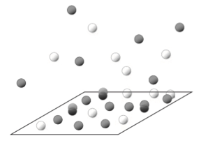

3. NPT¶
3.1. Open systems¶

\(NVT \rightarrow \mu VT\) by releasing N=const constraint to get \(\mu=const\)
In the \(\mu VT\) ensemble, the system samples different number of particles \(N\) consistent with \(\mu =const\) constraint imposed by putting system in contact with infinitely large chemostat.
%matplotlib inline
%config InlineBackend.figure_format = 'retina'
from ipywidgets import widgets
import matplotlib.pyplot as plt
import numpy as np
import scipy as sci
import seaborn as sns
3.2. \(\mu V T Ensemble\)¶
Let us single out one micro-state \(E_i, N\) of our system \(\Omega(E_i, N) =1\) and see what would be its probability in \(\mu VT\) ensemble.
Where we have used use the microcanonical ensemble of system+reservoir to cast the problem in terms of probabilities of the system.
3.3. Deriving probability distribution (complete analogy with NVT).¶
A more revealing is the expansion around system’s average energy \(U = \bar{E} = \sum_i p_i E_i\) and average particle number \(\bar{N} = \sum_i p_i N_i\) fluctuations around which are small:
\(\frac{U - E_i}{U} \sim O(N^{1/2})\)
\(\frac{\bar{N} - N}{\bar{N}} \sim O(N^{1/2})\):
Entropy of reservoir
$$S_r(E_{tot}-U + \color{blue}{ [U-E_i]}, N_{tot}-\bar{N} + \color{green}{[\bar{N}-N_i]}) \approx S_r(E_{tot}-U, N_{tot}-\bar{N}) +\Big( \frac{\partial S_r(E, N)}{\partial E}\Big) \color{blue}{ [U-E_i]} + \Big( \frac{\partial S_r(E, N)}{\partial N}\Big) \color{green}{[\bar{N}-N_i]}$$
$$ S_r = S_r(E_{tot}-U, N_{tot}-\bar{N}) + \frac{1}{T}\color{blue}{ [U-E_i]} - \frac{\mu}{T} \color{green}{[\bar{N}-N_i]}$$
Entropy of total system
Let us now use additivity of entropy of the combined syste+resoervioir in equilibrium:
3.4. Grand canonical distribution¶
Combining expansions of total and reservoir entropies we get:
3.4.1. Grand-Canonical distribution¶
3.4.2. Grand-Canonical Partiation Function¶
3.4.3. Free Energy¶
3.5. Connections with \(NVE\) and \(NVT\)¶
Grand canonical partition function
Hence why we call partition function Grand canononical as it is expresed as exponentially weighted (by \(e^{\beta \mu N}\)) summation of canonical parition functions over all values of N.
Laplace and Legendre transform connection with NVE and NVT
The free energy in grand canonical parition function is obtained by legendre transforming microcanonical ensemble over conjugate variables: \((S, T)\) and \((N, \mu)\).
Using Euler’s relation
3.6. Grand-canonical potential¶
Recall Gibbs equation of thermodynamics
Free energy minimization with \((T,V, \mu)\)
$$d\Psi = d (E-TS-\mu N) = (TdS -pdV +\mu dN) - (TS + \mu N)$$
$$\boxed{d\Psi = -SdT -p dV -Nd \mu}$$
Could also obtain via writing full differential of partition function, derivative s of which are various thermodynamic averages: \(d log Z_G(\beta,V,\mu) = -U d\beta - \beta p dV - \beta N d \mu = d PV\)
Equations of state
- \[S = -\frac{\partial \Psi}{\partial T}\]
- $$p = -\frac{\partial \Psi}{\partial V}$$
- $$N = -\frac{\partial \Psi}{\partial \mu}$$
3.7. Fluctuations¶
Notice anology with NVT where we found \(\sigma^2_E = k_B T^2 C_v\) for energy fluctuations with \(C_v\geq 0\) implying stability. For particle fluctuataions instead of heat capacity we have the isothermal compressibility \(\kappa_T = -\frac{1}{V}\frac{\partial V}{\partial p} \geq 0\)
3.8. Ideal Gas¶
Thermal wavelength \(\lambda = \frac{h}{(2 \pi mk_B T)^{1/2}}\)
Fugacity \(z = e^{\beta \mu}\)
3.9. Molecular adsorption on the surface¶

3.9.1. One site one molecule model**¶
For the idea gas \(\mu = k_B T log \frac{p}{p_0}\)
This is known as Langmuir isotherm.
3.9.2. Multi-stide binding of molecular gas with internal states**¶
Molecule A binds to one site and adopts 2 conformations.
Two molecules of B can bind one site. When one molecle is bound it has one conformation and when two bound there are 5 conformations.